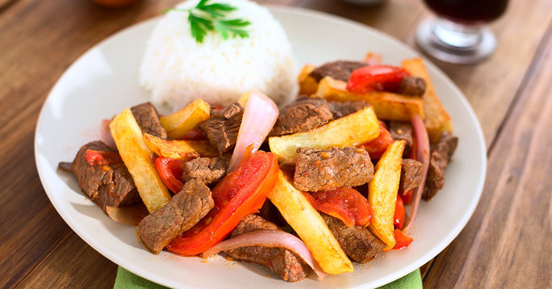
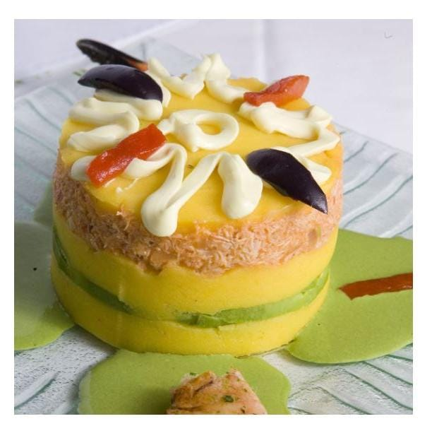
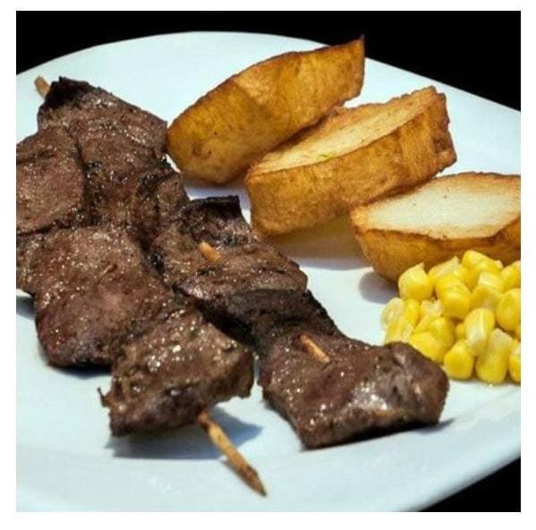
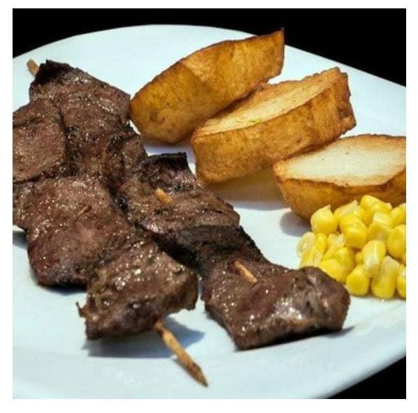

 L O M O S A L T A D O El lomo saltado es uno de los platillos más representativos de la gastronomía peruana, su origen data de finales del Siglo XIX, cuando un grupo de inmigrantes chinos llegaron a Perú trayendo consigo su sazón y sus ingredientes.
 CAUSA RELLENA La causa limeña probablemente sea uno de los platos más pedidos en los restaurantes, además, la receta ha ido cambiando con los años, pero antes de conocerla como ahora, tiene una historia ligada a la época de la Independencia del Perú  ANTICUCHO El anticucho es un tipo de brocheta de origen peruano, que posteriormente se volvió popular en algunos países sudamericanos con diferentes variaciones. Consiste en carne y otros alimentos que se asan ensartados en un pincho
 ANTICUCHO El anticucho es un tipo de brocheta de origen peruano, que posteriormente se volvió popular en algunos países sudamericanos con diferentes variaciones. Consiste en carne y otros alimentos que se asan ensartados en un pincho